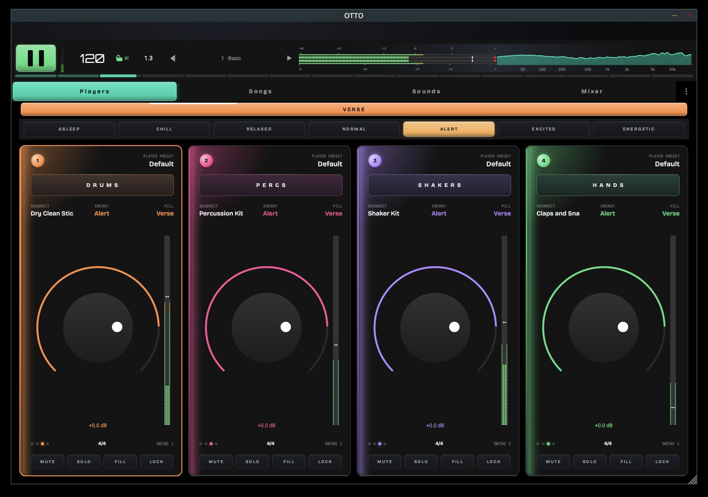
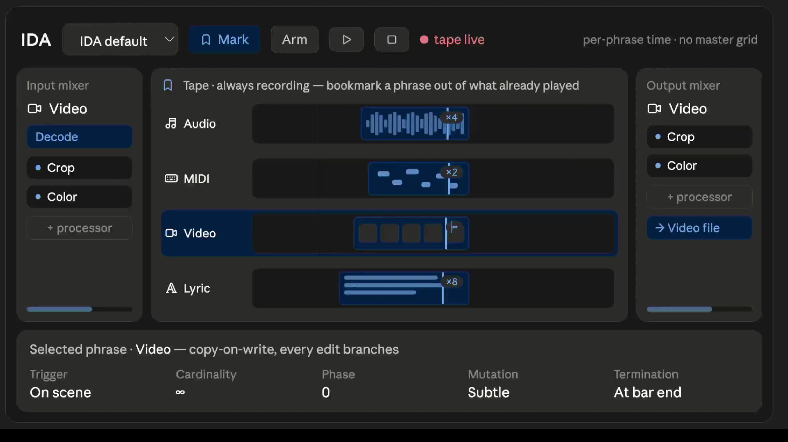
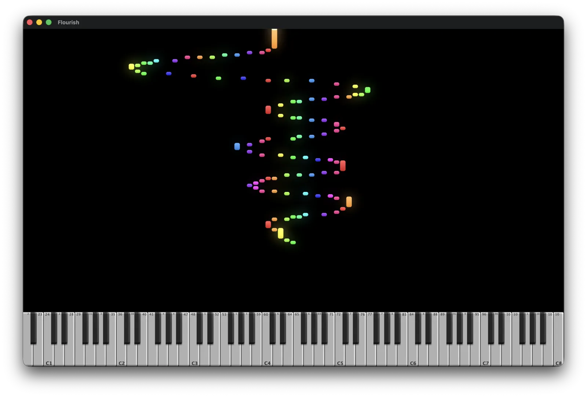
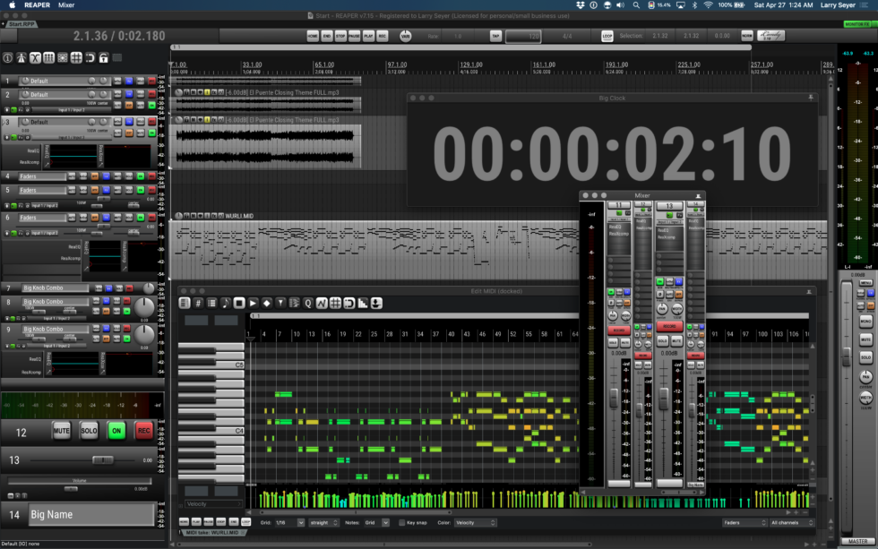
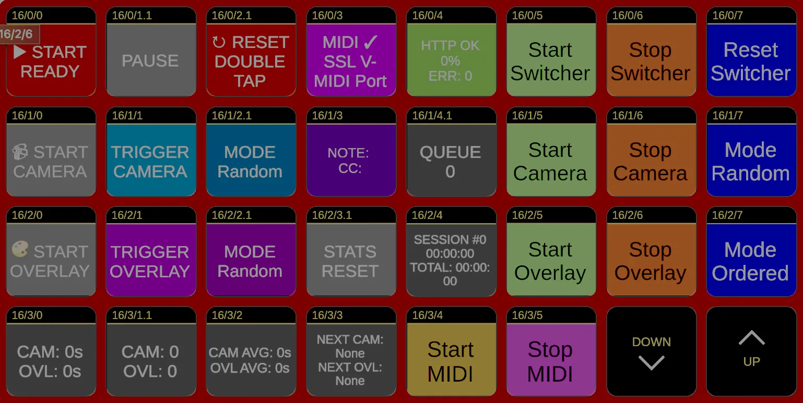
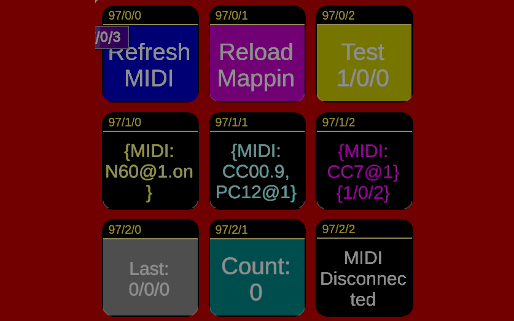

LOUIS
The Vector effects engines from Larry Seyer Drums and IDA, as standalone VST3, AU, CLAP, and AUv3 plugins.
Nineteen projects · All of them in use
Each project began as a solution to a need I had-something that didn’t exist elsewhere with the features I required.

The Drum DAW — a complete DAW built around drums, with four players that sound like real drummers.

Idea Development Arranger. Looping as the capture and repetition of musical ideas not limited to audio, midi, or video.

A sample-player instrument built to generate the missing dynamic layers of a sampled instrument.

Real time multi-input visualizer turning live MIDI, audio and speech into real-time particle and note graphics.

Custom theme for Reaper that's easy on the eyes and completely scalable.

Automated camera switching for solo artists who need an extra hand.

Turns MIDI messages into keystrokes, for OBS scene switching.
These started inside Larry Seyer Drums and IDA. They are being pulled out into plugins anyone can load.
The Vector effects engines from Larry Seyer Drums and IDA, as standalone VST3, AU, CLAP, and AUv3 plugins.
Continuous response for multisampled instruments. Proven in Larry Seyer Drums and VectorSampler, and available to license.
One engine that travels continuously through eight classic compressor characters, instead of a menu of them.
An algorithmic reverb whose every coefficient is derived from measurements of real rooms.
A distortion in its own right, with a character sweep running from fuzz through grind and crunch to warm.
Guitar amplifier and speaker solved together, competing on feel and response rather than static tone.
Algorithmic analog-tape coloration module for Larry Seyer Drums and IDA. Warmth, saturation, and movement.
Just The Facts. No opinions. No adjectives. No interpretation. Verified news from 21 independent sources.
A daily reader for A Course in Miracles, works across iPhone, iPad, Mac, Apple TV, and Watch.
Scoring and game software for darts, with Bluetooth board support and real match statistics.
The Larry Seyer & Marta Waterman musical duo. Visit the site →